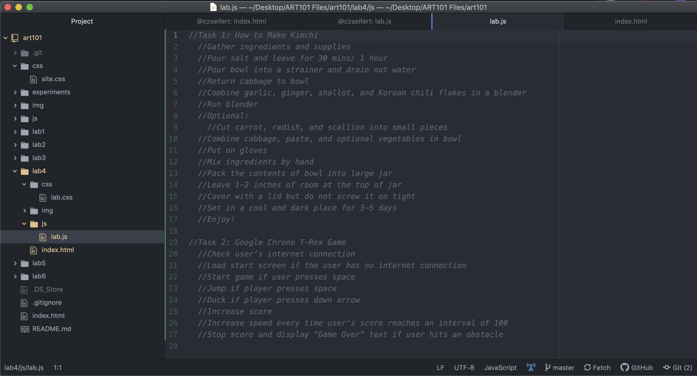

Lab 4: Pseudocoding and Problem-solving
Challenge
Our challenge was to take everyday tasks and turn them into pseudo-code.
Problems
It was tricky to put an action word at the beginning of each task.
The directions for the lab also confused us a little bit, we weren't sure whether to include the sample
submission text or our submission text in the submission.
We weren't really sure how to add our comments into our index.html file and what exactly the <pre>
and <code> tags meant.
Results
Task 1: Here is our pseudocode for instructions on how to make kimchi:
- Gather ingredients and supplies
- Put cabbage in a large bowl
- Pour salt and leave for 30 mins/ 1 hour
- Pour bowl into a strainer and drain out water
- Return cabbage to bowl
- Combine garlic, ginger, shallot, and Korean chili flakes in a blender
- Run blender
- Optional: Cut carrot, radish, and scallion into small pieces
- Combine cabbage, paste, and optional vegetables in bowl
- Put on gloves
- Mix ingredients by hand
- Pack the contents of bowl into large jar
- Leave 1-2 inches of room at the top of jar
- Cover with a lid but do not screw it on tight
- Set in a cool and dark place for 3-5 days
- Enjoy!
Task 2: Here is our psuedocode for the Google Chrome T-Rex Game
- Check user’s internet connection
- Load start screen if the user has no internet connection
- Start game if user presses space
- Jump if player presses space
- Duck if player presses down arrow
- Increase score
- Increase speed every time user’s score reaches an interval of 100
- Stop score and display “Game Over” text if user hits an obstacle
Here are our comments in the lab.js file
